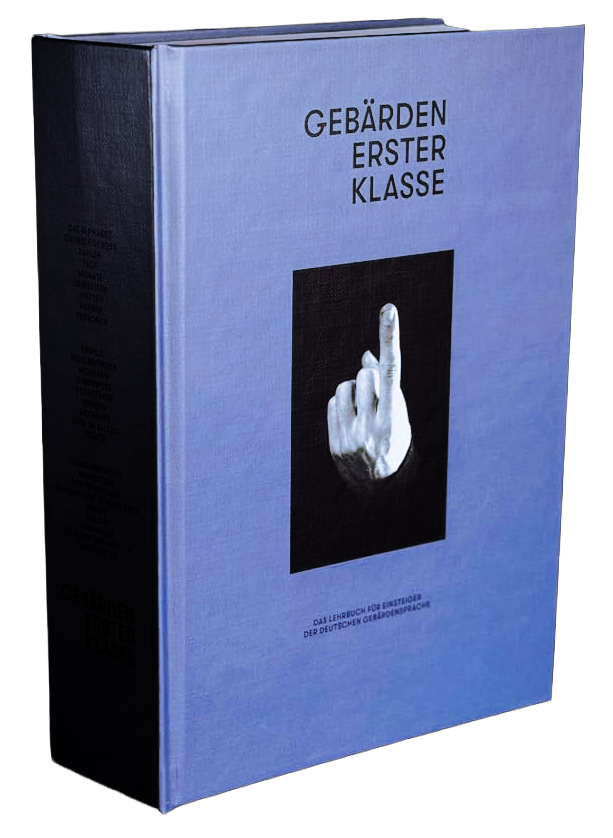

Gebärdensprache für Einsteiger
Das Lehrbuch für Einsteiger der deutschen Gebärdensprache
Anhand von über 26 Kapiteln, ca. 500 Vokabeln & einigen Übungsaufgaben verfolgt man das Ziel, »vertraute, alltägliche und ganz einfache Sätze« gemäß der Niveaustufe A1 zu verstehen und zu verwenden.

Gebärden erster Klasse
Stellen wir uns mal vor, wir wären in einem Land, in dem uns niemand versteht, obwohl wir dieselbe Sprache sprechen. Nach einer Weile würden wir uns ausgeschlossen fühlen.
Ungefähr 140.000 Menschen in Deutschland — weltweit mehr als 70 Millionen — sind im Alltag auf technische Hilfsmittel und die Unterstützung von Gebärdensprachdolmetschern angewiesen, um am gesellschaftlichen Leben teilnehmen zu können, da sie als gehörlos bzw. taub gelten. Also, warum nicht einen Schritt aufeinander zugehen und einen Gebärdenschatz aufbauen?
140.000
Menschen in Deutschland sind auf Gebärdensprache angewiesen
500
Vokabeln zum Lernen und Nachschlagen
26
Kapitel, Schritt für Schritt aufgebaut
A1
Niveaustufe für einfache, alltägliche Sätze
Einfacher Einstieg in die Gebärdensprache
Barrieren im Alltag abbauen
Über 500 Vokabeln lernen
Übungsaufgaben, um Gebärden zu vertiefen
Folge uns gerne auf unseren Social-Media-Kanälen
Neue Vokabeln, Einblicke und Neuigkeiten rund um das Buch.
Instagram